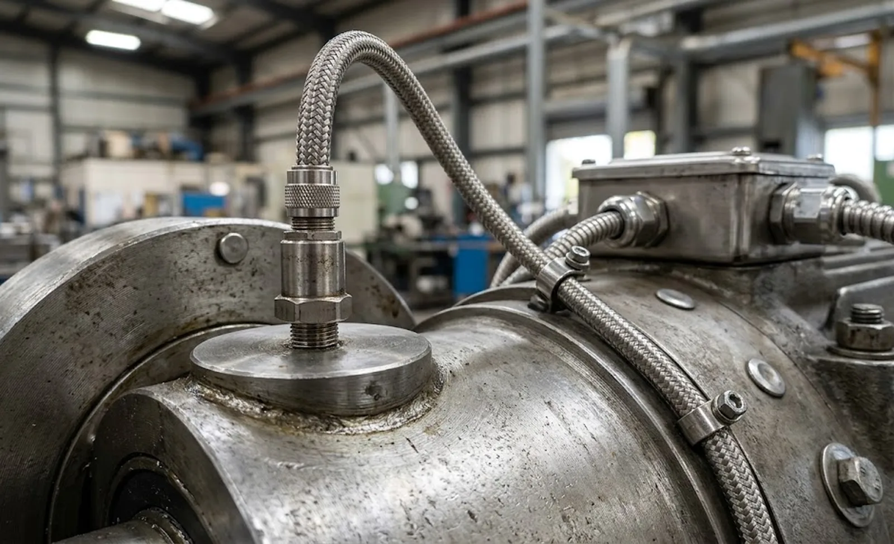

Published October 8, 2026 | By HDPTH Technical Editorial Team
Most slitter rewinder quotations include a “maintenance” chapter listing lubrication intervals and spare parts. Increasingly, buyers ask a different question: can the machine tell me when something starts to fail? The economics are blunt. A bearing replaced during a planned shift costs parts and hours; the same bearing seizing at speed causes a web break, rejected material, shaft and roller damage, and an unplanned stop. Condition monitoring catches the first case before it becomes the second. This guide explains what to monitor, which hardware earns its cost, and what to demand in the delivery.
Condition monitoring versus preventive maintenance
Keep the concepts separate, because suppliers often blur them. Preventive maintenance runs on the calendar: grease every N hours, replace bearings every M months — essential for consumables and the basis of our lubrication and PM guide. Condition monitoring runs on measurement: it observes how each component actually ages under your speeds, tensions and materials. A machine running abrasive nonwoven at high tension ages differently from one running light film — the same calendar cannot serve both. The practical structure is hybrid: calendar-based service for what wears predictably, sensor-based intervention for what does not. Ask which philosophy drives each subsystem: a serious answer names components, a sales answer names software.
What to monitor on a slitter rewinder
Concentrate on the rotating train, where failures develop progressively and stop the line:
- Unwind and rewind bearings — the highest-value targets. Vibration and temperature trends reveal raceway damage, lubrication breakdown and imbalance weeks before failure.
- Main drive motors and gearboxes — vibration exposes gear wear and misalignment; current analysis catches electrical faults.
- Large idler, lay-on and nip rollers — bearing wear first shows up as web vibration and roll defects.
- Core chucks — wear changes grip behaviour and shows up as torque irregularity and slip, visible early in torque trends.
- Hydraulic and pneumatic circuits — pressure drift indicates leaks, failing seals and clogged filters long before actuators stall.
Knife systems, by contrast, fail abruptly; consumable planning (see our spare parts inventory guide) serves them better than sensors. Monitoring spend should follow failure consequence, not component count.
Sensors and measurement hardware
The standard package is well established. Piezoelectric accelerometers on the main bearing housings, read as velocity RMS for overall condition and enveloped spectra for early bearing damage. Temperature points on the same housings and brake surfaces. Motor current analysis through the drive, which costs little because the drive already measures it. Pressure transducers on hydraulic and pneumatic circuits. Two details decide usability: mounting on machined pads (never on guards) and cabling routed away from power circuits. Ask the supplier for the sensor schedule with positions marked on the machine drawing — “vibration monitoring available” without a drawing is a promise, not a design.

Thresholds, trends and where the data lives
| Measurement point | What it catches | Typical alarm logic |
|---|---|---|
| Rewind/unwind bearing vibration | Raceway damage, imbalance, looseness | Velocity RMS warning and trip levels |
| Bearing housing temperature | Lubrication failure, overload | Absolute limit plus rate-of-change trend |
| Drive motor current | Electrical faults, mechanical binding | Deviation from expected current at speed and torque |
| Hydraulic/pneumatic pressure | Leaks, filter clogging, seal wear | Band limits plus drift trend over days |
| Rewind torque signature | Core chuck wear, slip, web breaks | Torque pattern deviation per recipe |
Thresholds need a rationale, not just numbers. Alarm limits derived from the commissioning baseline — ISO 20816 gives the severity framework — stay defensible when they trigger. Data must land somewhere you own: the historian discipline in our SCADA data logging guide applies. A system that streams into a vendor cloud with no local record leaves your machine’s health behind a subscription.
The baseline: what to demand at FAT and SAT
A trend is worthless without a starting point. Require baseline vibration signatures and temperatures for every monitored point at several speeds during the factory acceptance test, repeated after installation — foundations and rigging change the vibration behaviour of the same machine, as our rigging and installation guide describes. The acceptance package includes baseline files, configured alarm limits and the sensor schedule. Verification that each monitored value appears in the historian with the right tag and scaling is a FAT deliverable, not a post-installation apology.
Making the business case
Condition monitoring packages range from a few hundred euros of sensors to five-figure online systems, so justify by consequence. Count one unplanned stoppage: lost production hours, scrapped material, overtime, expedited freight. Compare that with the failure modes the sensors realistically catch — bearing and drive failures develop measurably early. For most plants the honest conclusion is a middle package: permanent monitoring on the few line-stopping components, portable checks for the rest, and staff who read the trends. Pair it with the service expectations in our remote diagnostics guide, but keep the health data inside your plant.
Specifying your next slitter rewinder?
Tell HDPTH which measurement points matter for your duty cycle. We deliver machines with documented sensor schedules, commissioning baselines and open data access — condition monitoring you own from day one.
Submit Your Project InquiryFrequently asked questions
What is the difference between condition monitoring and preventive maintenance?
Preventive maintenance replaces parts on a schedule whether they need it or not; condition monitoring replaces them when measured evidence says they are failing. The calendar approach either wastes healthy bearings or misses failures between intervals. The two work together: the calendar plan for consumables, sensors for the heavy interventions on rotating components whose life varies with speed, tension and material.
Which components on a slitter rewinder benefit most from monitoring?
The rotating train: unwind and rewind shaft bearings and housings, main drive motors and gearboxes, large idler rollers, nip rolls, and core chucks. These carry the load, run continuously and fail progressively — what monitoring detects. Knife holders and web guides fail abruptly, so good spare-parts planning serves them better.
What sensors are typically installed on a monitored machine?
Piezo accelerometer sensors on the main bearing housings of unwind, rewind and drive units; temperature points on the same housings and brake discs; current monitoring through the drive; and pressure sensors on hydraulic and pneumatic circuits. Coverage should concentrate on the few components whose failure stops the line, not spread across everything.
Do I need permanent online monitoring or are periodic portable measurements enough?
Portable route-based measurement with a handheld analyzer suits single machines with accessible points and trained staff. Permanent online monitoring earns its cost on high-speed lines, hard-to-reach machines, or plants where one day of unplanned stoppage costs more than the sensor package. The deciding number is the cost of one unexpected breakdown versus the hardware — calculate it, do not guess it.
What should the supplier deliver at FAT for condition monitoring?
Baseline vibration signatures and temperature readings for every monitored point at several speeds; documented alarm thresholds with the reasoning behind them; sensor schedules with positions marked on the drawings; and proof that monitored values appear in the historian with correct tags and scaling — the baseline recorded at FAT turns every later reading into a comparison.